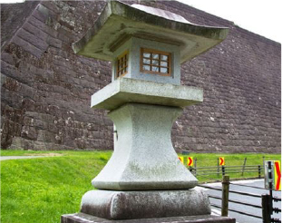
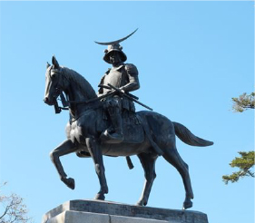
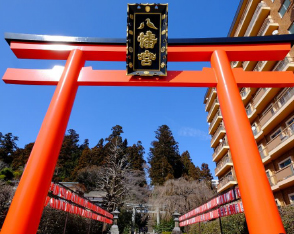
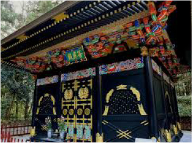
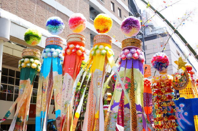
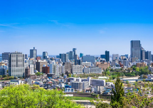
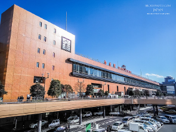
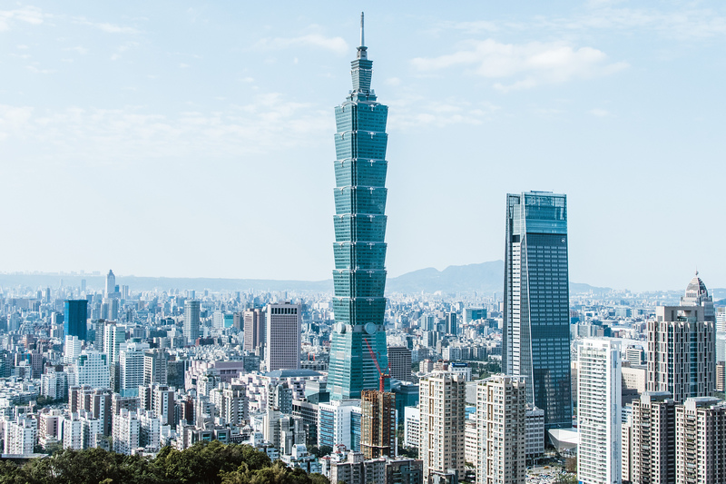
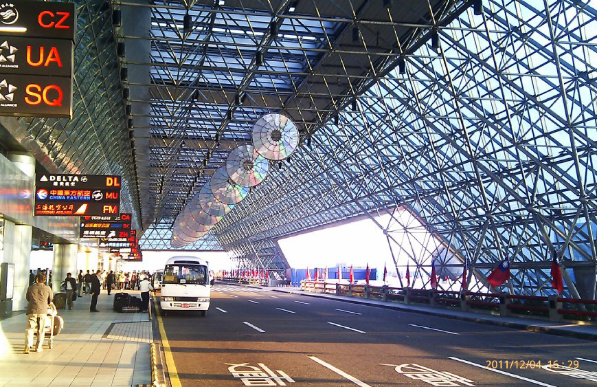
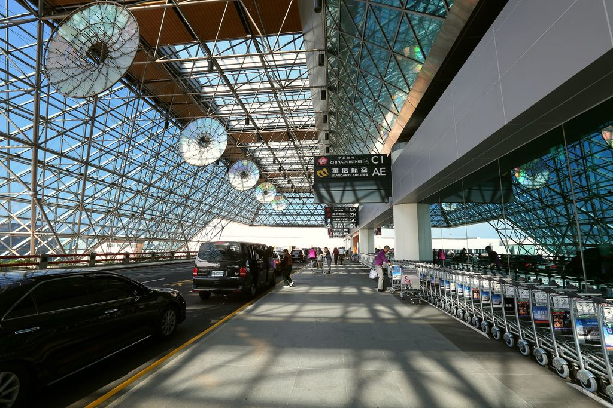

來去狐狸村
藏王狐狸村位於宮城縣白石的深山，最近的車站為JR白石站及JR白石藏王站，在大自然之中放養超過100隻狐狸的藏王狐狸村裡，不僅飼養有常見的北狐，還有銀狐、藍狐、十字狐等稀有品種，總計共六種。在放養的園內遊客可以近距離觀察到自然活動的狐狸，此外也有餵狐狸及抱狐狸的體驗時間，是其他地方所沒有的難得體驗喔。
藏王狐狸村官方網站狐狸村遵守事項
園內的狐狸並非完全馴養，為了避免被咬受傷，以下幾點入園時請務必注意：
在放養區域千萬不要去摸狐狸，會被咬。
避免穿深色或格子、花紋的緊身褲、飄飄的裙擺或寬管褲、有垂飾的服裝，這些容易會讓狐狸誤會為蛇、鼠、蝴蝶等小生物而提起興趣接近，有被咬的危險被狐狸跟著的時候千萬不要驚慌逃跑。
由於狐狸好奇心旺盛，對小朋友特別有興趣，三歲以下幼兒在放養區域務必要全程抱好背好，不要離開視線，也不要把手指伸進動物柵欄中，五歲以下幼兒禁止餵食狐狸。
此外由於園內是森林區域，有時也會有小朋友跌倒受傷，請好好牽好年幼的小朋友。
每名小學以下的兒童（含小學生）皆需有一名成人陪同，若是一位成人同時攜帶兩位兒童入場可是會被拒絕入場，請預備前往的爸媽務必留意。
抱狐狸的體驗限高中生以上才能參加。
藏王狐狸村並非普通的動物園，請做好自我管理，切勿心存僥倖，若有受傷或財物損失的情形，園區一概不負責。
每年五、六月是狐狸繁殖的季節，在抱狐狸體驗活動中會讓大家抱抱小狐狸。

雪碧旅照
去仙台不去看獨眼龍要幹嘛？
去仙台不去看獨眼龍要幹嘛？
來到仙台宮城縣，一定要造訪別名「青葉城」的仙台城，是伊達政宗的居住城墎。東側與南側由斷崖所包圍，形成天然的要塞。建物已燒失，只留下石垣傳達城郭當年的英姿了。
但從城跡所在地能眺望仙台市街區，甚至可遠眺至太平洋，是必訪的展望景點。這裡也立了伊達政宗像，成為仙台觀光的經典之地。
另外，依時段而異，有機會遇上「伊達武將隊」的表演，這是一群以伊達政宗為首，穿著歷史人物服裝迎接觀光客的武將隊，來訪之際可以留意一下武將隊們的身影
神社寺院巡禮－瑞鳳殿&大崎八幡宮
瑞鳳殿(ずいほうでん)是祭祀伊達政宗的靈廟，建於伊達政宗逝世隔年——1637年。以五顏六色的裝飾設計，斑斕奪目，該時期濃厚的文化特色依然留存。
由樹林包圍的參道有著神聖的氛圍，梅雨時期有美麗的繡球花，秋季有紅葉，冬季有雪景，一年四季各有不同的美景。
大崎八幡宮是1607年由伊達政宗建造的神社，擁有現存最古老的權限造是其一大特色。權限造是日本神社建築樣式之一，本殿和拜殿之間有名為「石之間」的幣殿，形成三殿一體的樣式。大崎八幡宮也被指定為日本國寶。
行程規劃
本行程採半自遊行，不用苦苦等車排隊、不怕迷路，即可前往偏僻景點，自由時間讓您充分飽覽仙台風景人情文化
第一天
狐狸村之旅7:00 飯店領隊集合 8:00 抵達狐狸村 8:30～11:30 遊園體驗時間 12:00 離開狐狸村
第二天
獨眼龍伊達政宗8:00 飯店領隊集合 8:30 抵達青葉城 9:00~10:30 領隊觀光 11:00 自由時間 (午餐自理)
- 
- 
第三天
狐狸村之旅7:00 飯店領隊集合 8:00 抵達狐狸村 8:30～11:30 遊園體驗時間 12:00 離開狐狸村
- 
- 
第四天
仙台深度旅遊（自由行）
- 
- 
- 
第五天
準備回台灣囉根據機票時間在飯店集合，領隊安排搭車前往機場返台
- 
- 
- 
驚爆價格
10/31前
報團參加
兩人同行
一人只要38888
- ＊價格包含住宿、狐狸村遊園門票、四天遊覽車費
- ＊每日飯店提供早餐，價格包含第一日與第三日午餐費用
- ＊不包含自由時間之花費以及領隊小費
立即電洽：0800-000-000 或 0900-000000 有專人為您服務
您可掃描LINE@加入雪碧好友 線上立刻諮詢！